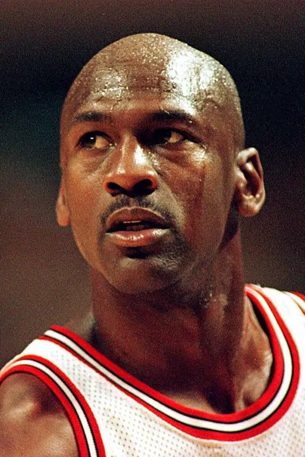

1

Michael Jordan
Widely regarded as the greatest basketball player ever, Michael Jordan's combination of skill, athleticism, and competitive fire was unmatched. A 6-time NBA champion with the Chicago Bulls, he won 6 Finals MVP awards and 5 regular-season MVP awards, defining an era of basketball in the 90s.